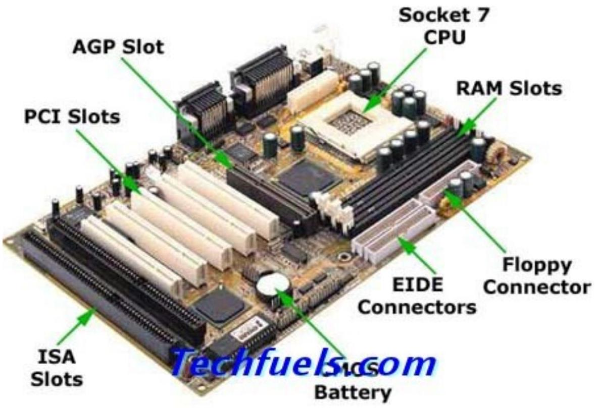
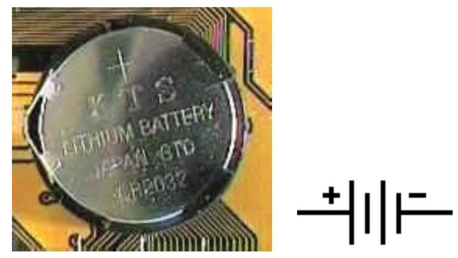
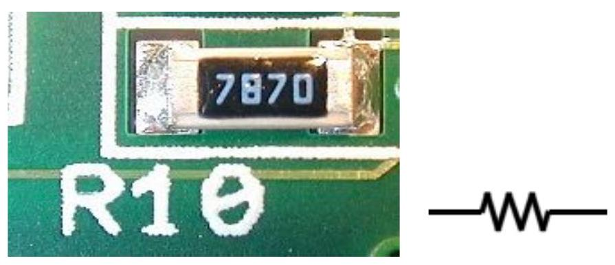
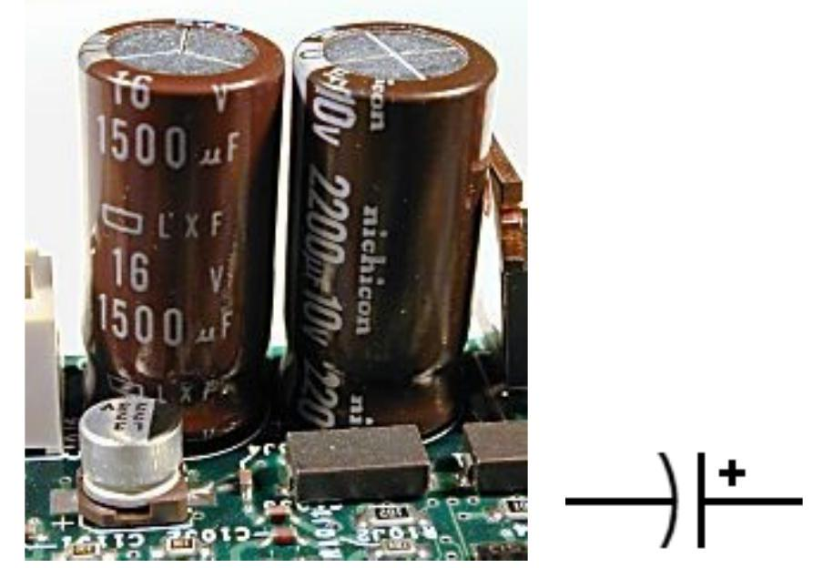
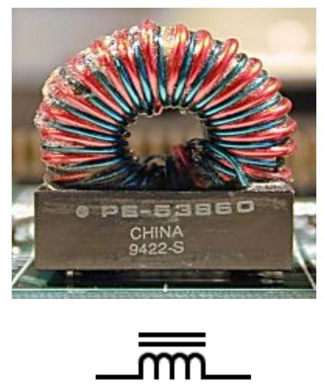
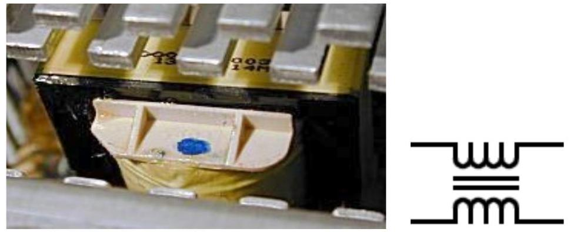
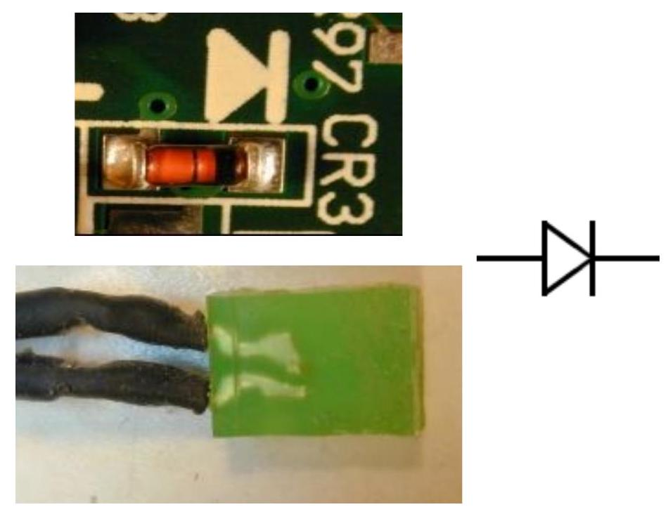
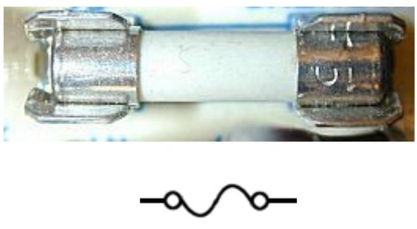

CPU - The CPU (Central Processing Unit) is often seen in the motherboard as it is the main core of every computer. All arrangement, calculation and control happen here.
BIOS - BIOS means Basic Input Output System which is a non-volatile memory that includes configuration details about the computer. It includes all the system required for the CPU to converse with the keyboard, mouse video display, hard drives and also other connections devices. When a PC is power-driven on it uses the BIOS 'boot code' set up much essential task that gets the Computer to a point where it is set to work.
RTC - RTC means Real Time Clock or it is mostly called as CMOS chip which maintains the date, day and time in a 24 hour format just like your watch. The computer uses this clock to 'time stamp' files as they are produced and customized. Whenever the user print a file it time stamps the pages as they are printed.
ChipSet - These are big chip(s) that combine many tasks which are used to create in split into smaller chips on the motherboard. As they save lots of space and cost.
The task completed by these chipsets frequently not working into two strategy with one if an interface from the CPU to the memory and the other providing controllers for IDE, ISA, PCI and USB devices.
🔌Primary Connectors found on the motherboard are:
Power - A 20 or 24 pin connector is being connected to the ATX connector to accept a plug from the power supply. This plug carries DC power to all the circuits on the motherboard.
Keyboard - A Mini-din 6-pin purple color round connector found at the back of the motherboard is the connector where keyboard is being plugged in.
Mouse - A Mini-din 6-pin green color round connector is just next to the keyboard connector and the mouse is being plugged in.
Display - This connector is not included into the motherboard but is built-in in this list since its task is very compulsory. It is a 15-pin, D-shell type connector specially found on a video card which the user have to install into the AGP connector of the motherboard which is in brown color and as today the motherboard are being highly developed and the VGA connectors are also inbuilt available in the motherboard and the even the AGP slots are being replaced by PCI Express slots which are being denoted in white color.
IDE - The IDE are termed as Integrated Drive Electronics. These are 40 pin connectors that make available a place to connect the ribbon cables from the hard drives and also the CD or DVD ROM drive. All data among the motherboard and the drives is being passing on through these cables.
FDD connector - It is like function to the IDE connector. It is a 34 pin ribbon connector that passes data among the motherboard and any floppy drive installed in the Computer. And the connector is in white color.
DRAM - DRAM consists of Dynamic Random Access Memory connectors especially for SIMM and DIMM type of memory modules. And confirm before installing the RAM whether the motherboard supports the DDR1 or the DDR2 memory module.
↔️Serial Connectors:
Standard Serial Connector - This connector has been about in PCs since they first appeared. It was initially located on ISA expansion type cards. Nowadays it is an essential part of latest motherboards. It is a 9- pin, D-shell connector that agrees to you to connect external devices with serial ports to your PC. The maximum data rate is \(115 \mathrm{~KB} / \mathrm{s}\).
USB - Universal Serial Bus -This is a comparatively new serial bus. Formerly specific as low speed, \(1.2 \mathrm{Mb} / \mathrm{s}\), it was improved to full speed, \(12 \mathrm{Mb} / \mathrm{s}\). The latest version 2.0 is specified as high speed of more than \(400 \mathrm{MB} / \mathrm{s}\).
↔️Parallel Connectors:
SCSI - The SCSI is being termed as Small Computer System Interface which sends the data at a maximum speed of up to \(80 \mathrm{Mb} / \mathrm{s}\). It not included into most computer motherboards. It can be installed in a computer in a form of Expansion card. With the help of this card the user can connect around seven hard drives in one computer.
Expansion Card Connectors - The CPU is being connected to expansion card connectors through one of the chip set ICs mentioned above. They are situated on the motherboard near the back of the computer. These connectors permit special utility cards to plug into and work with the computer.
Before motherboards incorporated the serial and centronix connectors were found on expansion boards that plugged into ISA slots.
⚙️Most PCs have the following expansion connector types:
PCI - The PCI is termed as Peripheral Component Interconnect which is a recent and quicker interface which accepts all expansion cards that have a PCI interface.

⚡Basic Electrical Components
There are several important basic electrical components that are commonly found in the circuits of virtually all PC parts and peripherals {power supply unit}. These devices are the fundamental building blocks of electrical and electronic circuits, and can be found in great numbers on motherboards, hard disk logic boards, video cards and just about everywhere else in the PC, including places that might surprise you.
•Battery: A direct current electricity source of a specific voltage, used primarily in small circuits.

A battery (in this case, a button cell on a PC motherboard.)
•Resistor: As you could probably guess from the name, a resistor increases the resistance of a circuit. The main purpose of this is to reduce the flow of electricity in a circuit. Resistors come in all different shapes and sizes.

Magnified surface-mount resistor from a motherboard. These small resistors are now much more common on PC electronics than the older, larger pin type.
📝Note the "R10" designation.
•Capacitor: A capacitor is a component made from two (or two sets of) conductive plates with an insulator between them. The insulator prevents the plates from touching

•Inductor: An inductor is essentially a coil of wire. When current flows through an inductor, a magnetic field is created, and the inductor will store this magnetic energy until it is released. In some ways, an inductor is the opposite of a capacitor. While a capacitor stores voltage as electrical energy, an inductor stores current as magnetic energy.

•Transformer: A transformer is an inductor, usually with an iron core, that has two lengths of wire wrapped around it instead of one. The two coils of wire do not electrically connect, and are normally attached to different circuits. One of the most important components in the world of power, it is used to change one AC voltage into another. As described above, when a coil has a current passed through it, a magnetic field is set up proportional to the number of turns in the coil. This principle also works in reverse: if you create a magnetic field in a coil, a current will be induced in it, proportional to the number of turns of the coil.

A transformer from the interior of a PC power supply. Note the large heat sink fins above and below it.
•Diode / LED: A diode is a device, typically made from semiconductor material, that restricts the flow of current in a circuit to only one direction; it will block the bulk of any current that tries to go "against the flow" in a wire. Diodes have a multitude of uses. For example, they are often used in circuits that convert alternating current to direct current, since they can block half the alternating current from passing through.

•Fuse: A fuse is a device designed to protect other components from accidental damage due to excessive current flowing through them. Each type of fuse is designed for a specific amount of current. As long as the current in the circuit is kept below this value, the fuse passes the current with little opposition. If the current rises above the rating of the fuse--due to a malfunction of some sort or an accidental short-circuit--the fuse will "blow" and disconnect the circuit.

A fuse, sitting in its fuse holder, from the interior of a PC power supply.
•Jumper: The jumper itself is a small piece of plastic and metal that is placed across two jumper pins to make a connection, or removed to break a connection. They come in a few standard sizes (and some non-standard ones I'm sure); only one or two sizes are commonly seen on PCs. Jumpers are sometimes also called shunts.